class: center, middle # Exploring Supernova Driven Turbulence Through Implementing Realistic Supernovae __Jacob Buete__ _Supervised by Dr. Christoph Federrath_ --- # Overview of the Talk 1. Why should we explore supernova-driven turbulence? * Turbulence affects the Star Formation Rate, and evolution of the interstellar medium * Supernovae are thought to be a major source of compressive turbulence 2. Implementing a Realistic Supernova * Three phases of supernova evolution: free expansion, Sedov phase, snowplow * Sedov phase based on the Sedov Blast wave solution 3. Generating Supernova-driven turbulence in simulations * "Supernova-Driven Box" --- class: section, center, middle .left[ # Background Information ] .right[ ### Turbulence ### Supernovae ### Supernova-driven Turbulence ] --- # Turbulence <table> <tr> <td> <p> - A turbulent flow is characterised by chaotic changes in the velocity or pressure within a fluid flow </p> <p> - Shows the presence of vortices</p> <p> - Thought to be linked to the Star Formation Rate (SFR), and the structure of the Interstellar Medium (ISM) </p> </td> <td> <figure> 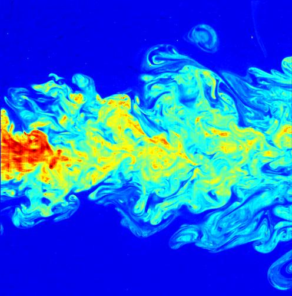</img> <figcaption> Image: Fukushima, C. Westerweel, J., JPG 2007, Technical University of Delft </figcaption> </figure> </td> </tr> </table> <p class='citation'>Mac Low and Klessen 2004; Krumholz and McKee 2005; McKee and Ostriker 2007; Krumholz et al. 2009; Hennebelle and Chabrier 2011; Federrath and Klessen 2012; Padoan et al. 2014; Salim et al. 2015] </p> --- # Supernovae - One of the last stages of stellar evolution - Multiple kinds: - Type Ia, Ib, Ic, II - Type Ib/c are rarer .left[ <figure><img src="https://upload.wikimedia.org/wikipedia/commons/d/d4/Keplers_supernova.jpg" height="300px" width="300px"></img><figcaption>Image: NASA/ESA/JHU/ R.Sankrit & W.Blair, JPG, 2003</figcaption></figure> ] .right[ - Very high energy (~$10^{51}$ erg) - Three Phases: - Free expansion phase, - Sedov(-Taylor) phase, - Snowplow phase. ] --- # Stages of Supernova Evolution - __Free expansion phase__: - Very short lifetime (~300 yr). - Very high shock-speeds (~$10^4$ km/s). - We don't know much else. - __Sedov phase__: - Pressure Driven - Longer Lifetime (~$10^4$ -- $10^5$ years). - Fast shock speeds (~ $10^2$ -- $10^3$ km/s). - Well studied — has an analytical solution (useful for simulating!) - __Snowplow phase__: - Momentum Driven - Final stage of supernova evolution - Lasts until the shock speed reaches the ambient sound speed --- # Supernova-driven Turbulence - Supernovae are a source of *compressive* turbulence - Compressive turbulence leads to higher density fluctuations in the ISM - Can trigger star formation nearby - Can also disrupt stellar nurseries - Supernovae also heat up the surrounding ISM - Temperatures in the centre of a supernova can reach $10^{10}$ K - Most of the energy in a supernova is in thermal energy - This energy is radiated away within 100 kyr. .citation[Krumholz and McKee 2005; Federrath et al. 2008; Federrath et al. 2010, Federrath and Klessen 2012, Kainulainen et al. 2013] --- class: section, center, middle .left[ # Implementing a Supernova Model ] .right[ ### Prior Work ### Sedov Solution ### Potential Issues ] --- # Prior Work #### FLASH - An Eulerian, grid-based, hydrodynamics code-base from the University of Chicago - Widely used for simulations #### Sink Particles - Due to the resolution limitations of simulations stars cannot be individually resolved - Sink Particles offer a solution to this by providing an analogue to the formation of whole stellar nurseries - In FLASH they can also generate magnetic outflow jets, and accretion discs — mimicking early stellar development - I further this relationship by using Sink Particles as the basis for supernovae. .citation[Fryxell et al. 2000; Federrath et al. 2010; Federrath et al. 2014] --- # Past Supernova Implementations - Past implementations have made assumptions about the internal structure of supernovae - Inserted uniform mass and thermal energy throughout the supernova region - Inserting only thermal energy - Uniform velocities, or linear kinetic energy profiles - These assumptions are not always in-line with literature on Supernova structure ### My Model - Based on analytical blast wave solution - Inserts supernovae with consistent physical structure - Dynamic, based on ambient conditions surrounding the supernova .citation[Dubois and Teyssier 2008; Simpson et al. 2015; Bubel 2016] --- # The Sedov Solution The Sedov solution is an analytical solution for a blast wave in a uniform medium - It is *self-similar*. - This means that the solution is scale-invariant and time-invariant - The solution can be expressed in a coordinate system in which it is stationary — I will use $\eta$ for this system $$ r = \eta \left(\frac{Et^2}{\rho_0}\right)^\frac{1}{5} $$ - Useful because we can approximate supernovae as a spherically symmetric blast wave - Is the foundation of the Sedov phase of supernova evolution --- # Assumptions of the Sedov Solution The Sedov solution has a few key assumptions: - There is a sudden influx of energy into a point within a uniform, stationary medium - The energy is high enough that the resulting shock is supersonic, i.e. *strong* - The internal pressure is much greater than the external pressure - The radiated energy is much less than the initial energy inserted - We can approximate the energy within the supernova shock as constant --- # Deriving the Sedov Profiles .left[ The Sedov profiles are generated by making a set of ansatzë: $$ \rho(\eta) = \frac{\gamma + 1}{\gamma - 1}\rho_0A(\eta) $$ $$ P(\eta) = \frac{2\rho_0 v_s^2}{\gamma + 1}\left(\frac{\eta}{\eta_s}\right)^2B(\eta) $$ $$ v(\eta) = \frac{2 v_s}{\gamma + 1}\left(\frac{\eta}{\eta_s}\right)C(\eta) $$ ] .right[  ] The ansatzë can be substituted into the conservation equations in spherical symmetry and then numerically solved to produce a set of profiles. --- # Extending the Sedov Profiles - Simulations will be using the Bouchut Solver - This solves the equation of state after each time-step, overwriting the pressure in each cell to make sure that the equation of state holds - We need to insert the internal energy instead if we use the ideal equation of state — isothermal and polytropic don't need this The internal energy profile can be calculated from the ideal equation of state $$ P = \rho \epsilon (1 - \gamma) \longrightarrow \epsilon = \frac{P}{\rho (1 - \gamma)} $$ Substituting in the relavant profiles produces: $$ \epsilon(\eta) = \frac{2v_s^2}{(\gamma + 1)^2}\left(\frac{\eta}{\eta_s}\right)^2 \frac{B(\eta)}{A(\eta)} $$ --- # Implementing the Sedov Solution 1. Sedov Profiles are generated the first time the module is called 2. Sink Particles are checked at the start of every call to see if any can go supernova - Checked for three conditions: age, mass, and then expansion time - Expansion time added to ensure the solution doesn't insert thousands of years of evolution in a single time-step 3. Sedov profiles inserted within a user-supplied radius of the Sink Particle 4. Conservation is ensured through a 2 loop system - First loop calculated what the Sedov profiles are going to insert to the region - Second loop calculates scaling values to ensure global conservation of mass, momentum, and energy --- # Issues ### Isothermal equation of state 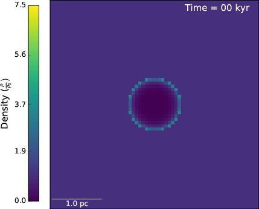</img> 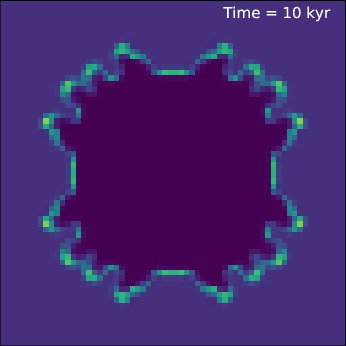</img> 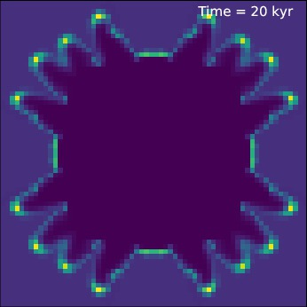</img> --- # Issues ### Isothermal equation of state, smoothed 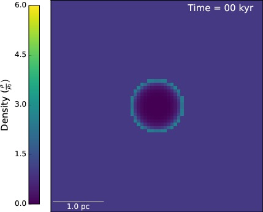</img> 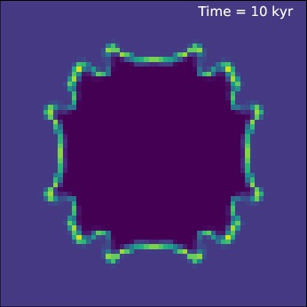</img> 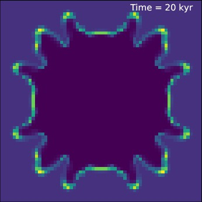</img> --- # Issues ### Polytropic equation of state, smoothed 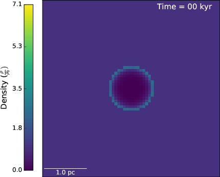</img> 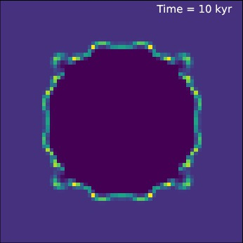</img> 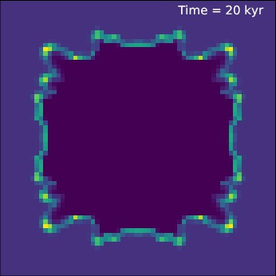</img> --- # Issues ### Ideal equation of state 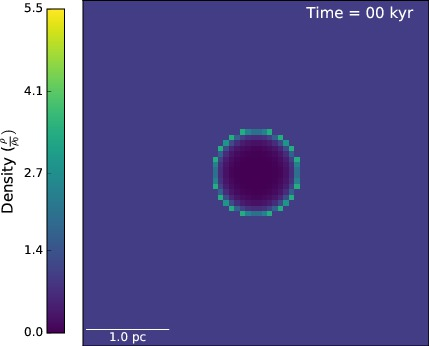</img> 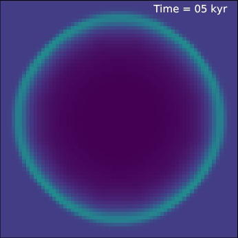</img> 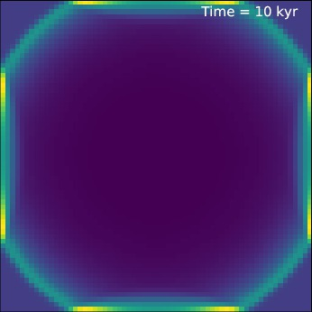</img> --- # Issues ### Ideal equation of state, cooled 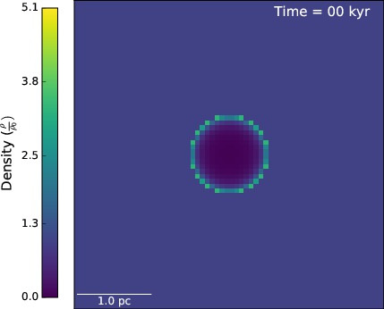</img> 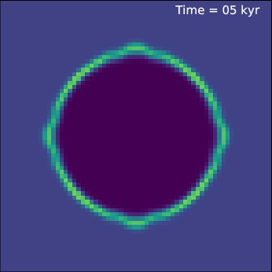</img> 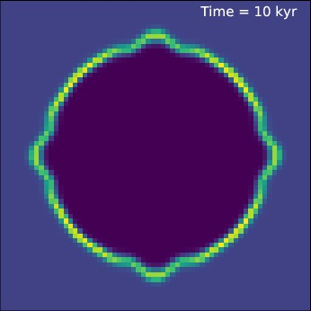</img> --- # Conclusions on the Equation of State - Testing found that the isothermal and polytropic equations of state produces an unstable shock front - The shock front also collapses earlier than it should - Ideal equation of state works best for the self-similar solution - The additional internal energy supports the shock front, greatly reducing instabilities - But without cooling the shock continues to expand far longer than the lifetime of the Sedov phase. - Introducing cooling produces the most accurate supernova evolution - Collapses at a reasonable time - Benefits from the presence of the internal energy --- class: section, middle .left[ # Exploring Supernova-driven Turbulence ] .right[ ### Experimental Setup ### Results ### Further Work ] --- # The Set-up In order to explore the impact of supernova-driven turbulence we want to insert supernovae at random positions within a simulation box. The simulation will be a 250 pc cube with a uniform density of 5 cm$^{-3}$. - Supernovae are inserted with some time separation such that the average time between supernovae is 180 ± 72 kyr. - The simulation was run twice at resolutions of $128^3$ and $256^3$ cells - The supernova radius was set to 8 cells in either simulation. - Due to time-constraints the $256^3$ simulation was only run for 10 Myr, while the $128^3$ was run for 40 Myr. --- .center[ <video width=480 height=480 controls> <source src="../movies/128_density_proj.mp4" type="video/mp4"> </video> ] ---